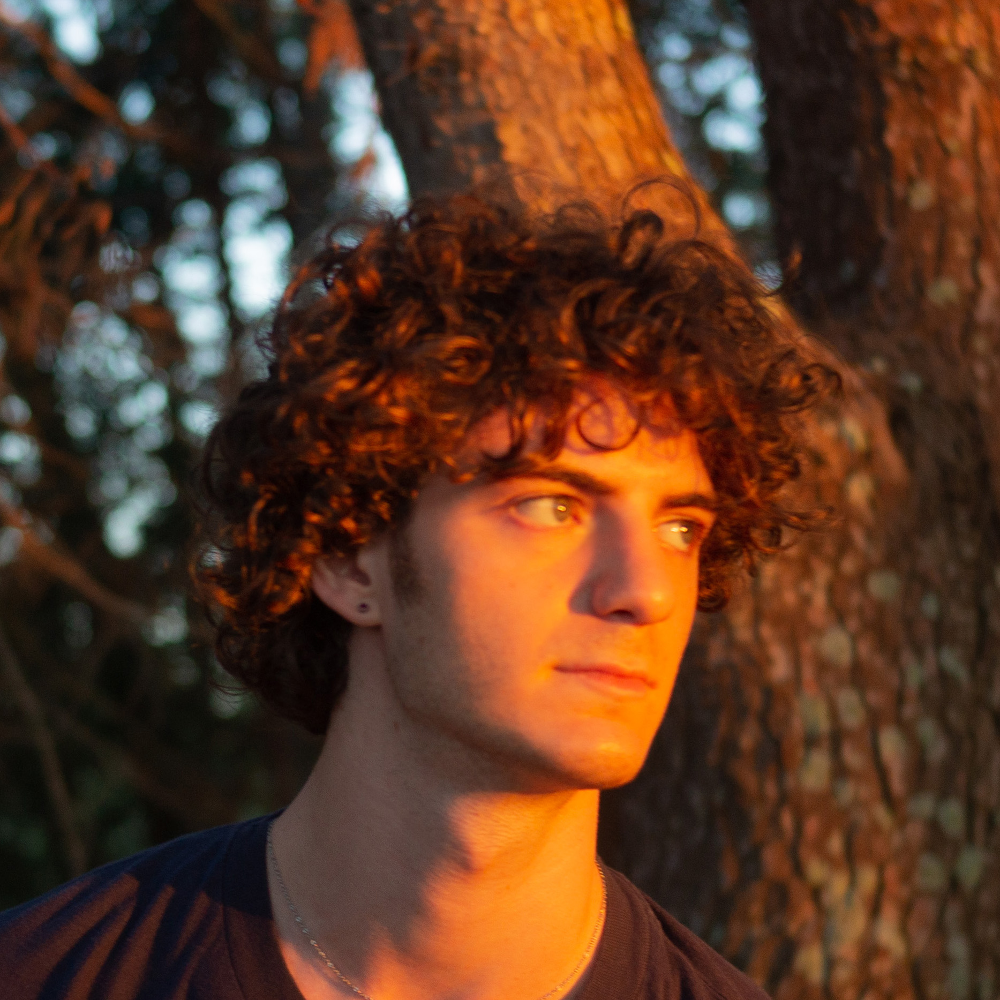

andrea campa

I'm a sound designer, coder and multi-instrumentalist based in Turin, Italy.
Drawing inspiration from the world of fashion, design and architechture, I try to channel the creativity of these worlds into what i make.
This website is part portfolio, part design experiment to gather my various projects.
Try the dark/light mode! (lightbulb in the menu).
sound design
I believe that sound is more than just noise: it's an integral part of storytelling, emotion, and immersion.
SOUNDS COLLECTION
A diverse collection of sounds that span field recordings, resampling and playing with synths. Some of my favorites are:
madrid 2049 is a cyberpunk interpretation of the city's metro. It combines recordings taken during a 2015 trip and a futuristic setting.
big place 1/2: I stretched sounds hundreds of times their original length, creating sonic landscapes that feel like you're in an enormous space.
modular birth is a snippet from a modular synth masterclass I attended in 2019. I imagined what a digital birth might sound like.
REDESIGN
In this project I decided to rework fashion commercials by replacing their original soundtrack and sound design with my own.
coding
MAX FOR LIVE
Max for Live is a software platform that integrates visual programming with Ableton Live.
It allows the user to create audio and midi devices, but also extends to video processing and real-world integration, making it extremely versatile for creating mixed-media art that combines audio, video, and physical elements.
These are some of my M4L devices:
CREATIVE DELAY
This device offers four delay types
- Stereo
- Standard Ping Pong
- Narrowing Stereo
- Expanding Ping Pong
and a filter for emulating the vintage sound of analog units.

MODDED LFO
I modded the stock M4L LFO by adding new functionality while preserving most of its original code.
Now it features:
- Musical Subdivision Frequency
- Ramp Time for smooth transitions
- Buttons to trigger different time settings
hardware
Here's a showcase of my hardware tinkering experiments, predominantly focused on guitar and synth pedals, with a touch of MIDI creations and various utility-driven audio devices.
My hobby of building gear has been an awesome way to get my head around how signals and audio really work, all while making wild sounds
GUITAR PEDALS
60X BOOST (SUPER HARD ON CLONE)
The Zvex Super Hard On is a compact, high-gain booster pedal known for its simplicity and incredible signal boost capabilities, providing a staggering 60 times increase in volume.

WEIRD FUZZ (FUZZ FACTORY CLONE)
The Zvex Fuzz Factory is an iconic and versatile fuzz pedal renowned for its unique and experimental sound. It offers a wide range of chaotic sounds and wild sonic textures.
SYNTH PEDALS
TWO-VOICED SYNTH
This drone pedal/synth has two knobs for pitch control of square wave oscillators, octave switches for extended tonal range, and a bypass switch to let through your original input signal. Fully designed and built by me.
BOSS DD-3 ANALOG MOD
I added a switch to toggle between standard repetitions and filtered ones, which emulate the warmer sound of bucket brigade delays like the EHX Memory Man.
UTILITIES
TRUE BYPASS LOOP
This can be used to add true bypass to any effect linked to its send/return loop.
EXPRESSION KNOB
This one-knob pedal can be used to replace an expression pedal placed on a fixed position.
By toggling it on and off, you can seamlessly switch between two preset values, effectively adding preset functionality to compatible hardware.
MIDI
DIN2USB MIDI HOST
This device takes MIDI sent/received from the din connector and converts it to a usb signal. Built using hobbytronics parts.
contacts
| Soundcloud | |
| @andreacampa_ | |
| @opend4y | |
| Github | |